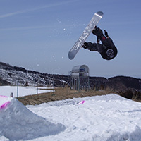
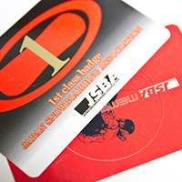

スノーボード
中学校、高校と冬のスキーイベントは中止になり、
日の目を見ることはありませんでした…
スノーボード歴15年

小学生のころ、1回小さな大会に出たっきりで基本的に大会は出てません。グラトリをしたりパークに入ったりもしますが、白馬で人を轢いて以来飛ぶときの姿勢がおかしくなっています。
上達しだしたのは10歳くらいからですが、新潟で女子大生のインストラクターとのマンツーマンレッスンがきっかけです。女の力は偉大です。
コース外を滑ってたら数メートルの崖のようなものから落ちそうになったり、小雪崩が起きたりしましたが、誰に話しても嘘だと思われます。本当の話です。
JSBA認定バッチ１級

講習会を受ければインストラクターの資格が取れる段階にいます。インストラクターとして働いてません。働きたかったのですが、応募されてる時期と大学の日程がうまく嚙み合わなかったため、ただ滑りに行くだけになってしまいました。
この検定は高校生のときに取ったものなので、今受けて取れる実力があるかは怪しいところです。